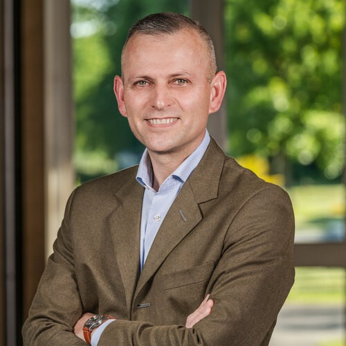

All programmes / Cybersecurity for Business Leaders
Cybersecurity · Online certificate
Cybersecurity for Business Leaders
Build the strategic perspective needed to govern cyber risk and strengthen organisational resilience.
Programme length17 weeks
60 hours of teaching
60 hours of teaching
Delivered byESCP Business School
Executive Education
Executive Education
Build a custom learning programme
Select modules from this certificate and combine them with our wider portfolio. Arrange your learning journey and review the total teaching hours.
Explore modules & build a bundleProgramme overview
Build the strategic perspective needed to govern cyber risk and strengthen organisational resilience.
Who is it for?
Executives and senior decision-makers responsible for digital resilience.
Learning experience
Online learning with self-paced content and live interaction. Confirm the current schedule and delivery arrangements with the programme team.
No verified programme video is available in this guide yet.
What you will learn
Strengthen governance and organisational resilience.
Practise executive cyber-crisis decisions.
Programme syllabus
Module 1 · Geopolitics and cybersecurity
Planned teaching: 12 h · Live sessions: 3 h
Understand actors, sovereignty and geopolitical influences on cyber risk.
Module 2 · Threat analysis and risk assessment
Planned teaching: 12 h · Live sessions: 3 h
Assess threats, vulnerabilities and priorities for protection.
Module 3 · Regulatory environment
Planned teaching: 12 h · Live sessions: 3 h
Examine regulatory requirements and executive accountability.
Module 4 · Risk protection strategy and governance
Planned teaching: 12 h · Live sessions: 3 h
Align security strategy and governance with organisational priorities.
Module 5 · Cyber-crisis decision exercise
Planned teaching: 12 h · Live sessions: 3 h
Apply frameworks to a realistic cyber-crisis decision exercise.
Assessment
Quizzes, assignments, and an individual confidential capstone on an organisational challenge.
Learn from faculty & experts

Admissions & prerequisites
No technical background is required. Designed around executive oversight and governance.
Start your application through the official ESCP portal. Admission and registration are subject to the programme’s requirements and review.
CPF eligibility must be checked for the exact programme and session. The funding tool gives an indication, not an approval.
Your next step
Ready to explore Cybersecurity for Business Leaders?
Check the official programme information and discuss any questions with Dimitri before applying.
Your questions, answered
How do I apply?
Use the Apply online button to open ESCP’s official application portal. The programme team confirms admissions requirements and your place. If registration is not yet open, contact Dimitri.
Can I use CPF funding?
Eligibility depends on the exact programme and session. Verify its listing on Mon Compte Formation and use our funding guide to explore your options.
What is the learning commitment?
Teaching duration: 60 hours. Programme length: 17 weeks. Total workload: 120 hours. Confirm the weekly schedule and assessment requirements with the programme team.
Who can help me choose a programme?
Contact programme director Dimitri Champollion to discuss your goals, programme fit and upcoming sessions.
Information checked 14 October 2026 against the official ESCP programme page. Confirm current dates, fees, admissions, curriculum and faculty before applying. Illustrative imagery.